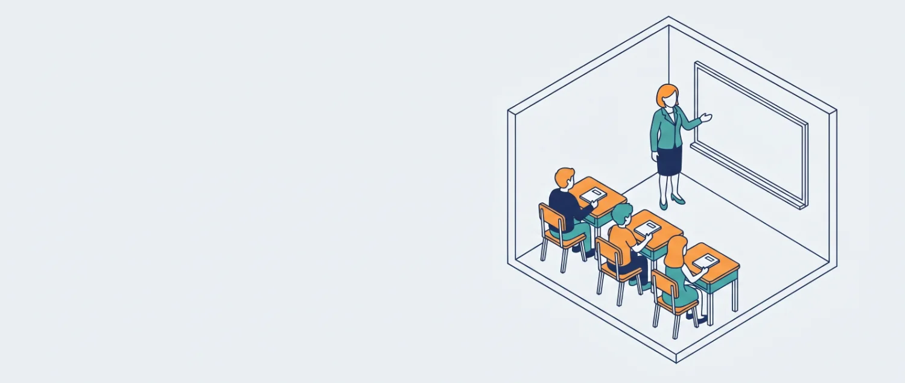

Sınıf Etkinliği
Önceden planlanan, tek bir öğrenciye değil doğrudan bir sınıfa yönelik grup çalışmaları (örn. rehberlik tanıtım dersi). Kaydettiğinizde Gündem ve Takvim'e otomatik işlenir.

Yeni Sınıf Etkinliği Planla
Çizelgeden Toplu Ekle Word · PDF · Excel · Fotoğraf
Hazırladığınız "Rehberlik dersi" çizelgesini (tarih, ders saati, sınıf, sınıf öğretmeni) yükleyin; program satırları okuyup sınıf etkinliği olarak önerir, siz kontrol edip tek tuşla eklersiniz. Dosya bu bilgisayarda okunur, internete gönderilmez. Fotoğraflar Windows'un kendi yazı tanıma özelliğiyle okunur; fotoğrafta okunamayan yerleri önizlemede düzeltmeniz gerekebilir.
Çizelge dosyasını buraya sürükleyip bırakın
veya
veya
Word (.docx), PDF, Excel (.xlsx), CSV veya fotoğraf (JPG/PNG) · Dosya seçilmedi